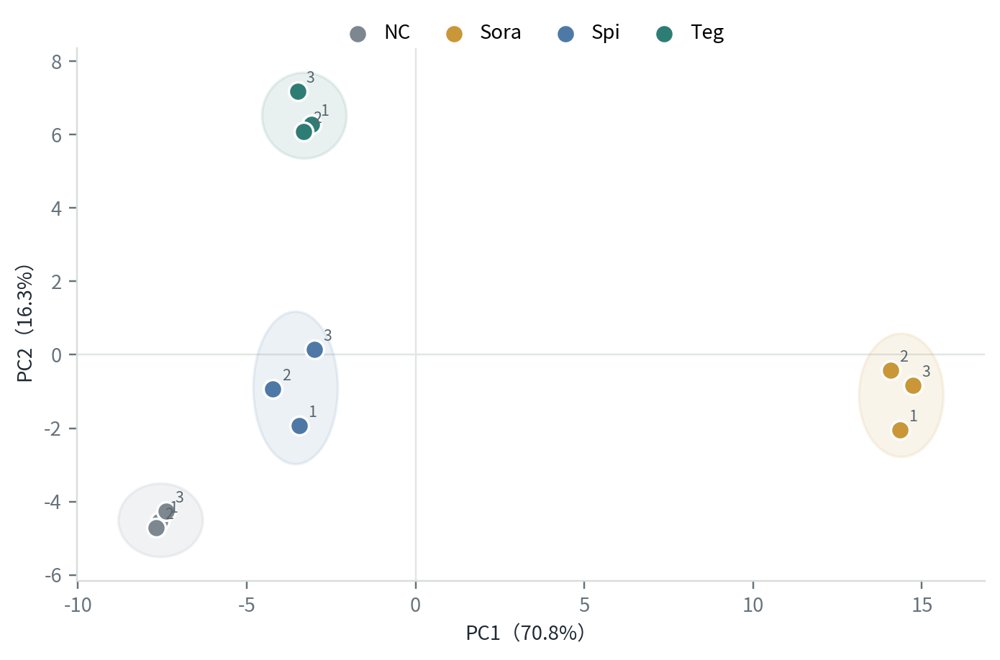
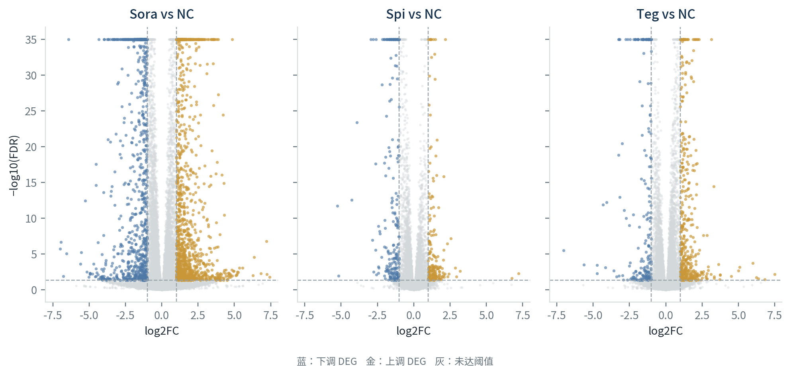
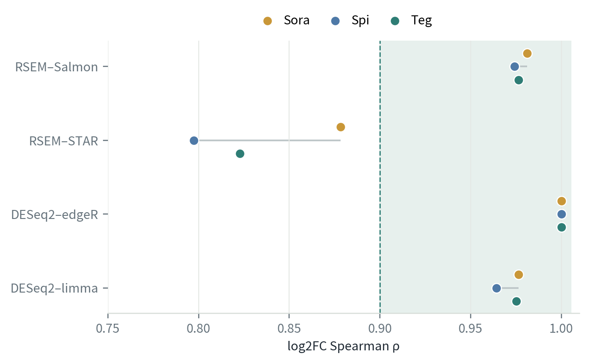
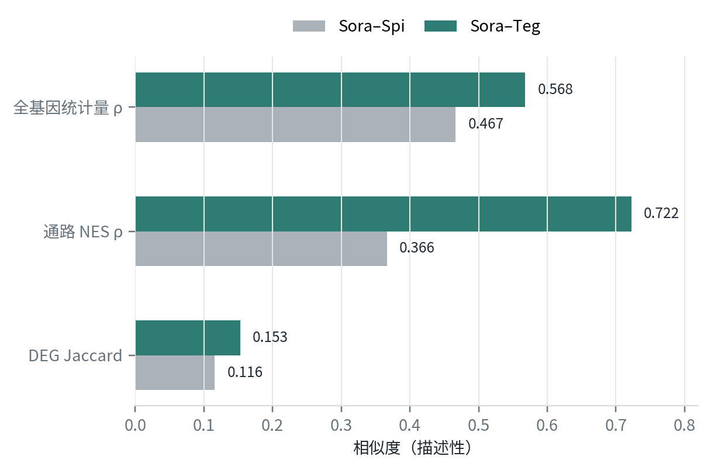
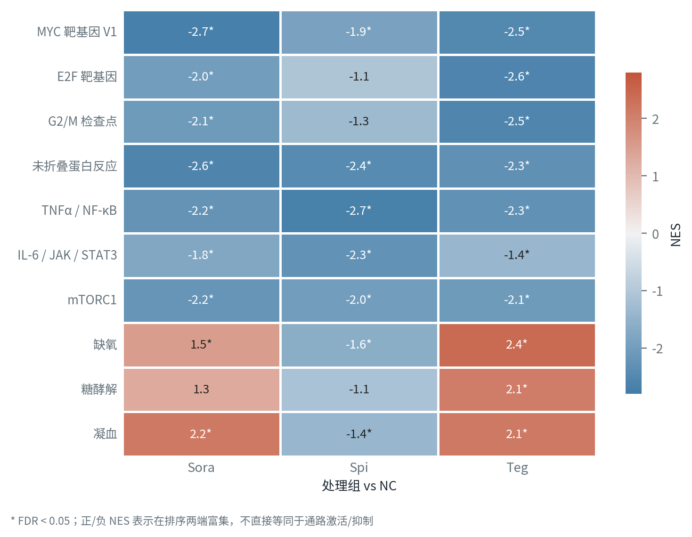

DRUGREP · TRANSCRIPTOMICS
HCC 候选药物RNA-seq 下游分析
对 ZZH 前期核心表格的复核、稳健性分析与通路线索
12 个样本
3 个处理
3 套定量
结论边界：本次仅比较药物扰动，不能据此宣称 HCC 逆转或疗效。
从样本到可讨论的机制线索
NC ×3
Sora ×3
Spi ×3
Teg ×3
QC → DEG
→ GSEA / ORA
→ GSEA / ORA
2026-08-21RNA-seq downstream review
02DRUGREP · HCC RNA-SEQ
汇报结构与下游分析路径
先验证，再解释
01
数据与质量
输入是否完整、样本是否可信
02
差异表达
三种处理的响应幅度与方向
03
稳健性
定量方法与统计方法是否一致
04
通路与判断
候选药物差异、边界、下一步
已完成的下游分析步骤
1输入核对
校验和 / 表结构 / 样本对应
2表达 QC
库大小 / 相关性 / PCA / 热图
3DEG
RSEM–DESeq2 为主；复现阈值
4稳健性
Salmon / STAR；edgeR / limma
5通路
全基因 Wald 排序 GSEA；上下调 ORA
6横向比较
基因、DEG、NES、leading edge
03DRUGREP · HCC RNA-SEQ
原始数据与质量控制
12 样本 · 4 组 · n=3
NC3 replicates
Sora3 replicates
Spi3 replicates
Teg3 replicates
ZZH 已完成
QC / 比对 / 表达定量 / DESeq2 / edgeR / limma
本次复核
52 个校验和；样本名一致；计数非负；DEG 阈值完全复现
仍缺失
FASTQ 级 QC、比对汇总、完整实验与批次信息
注释合并最后一步报错，但核心计数与 DE 表均可用。
PCA：各组分离，组内重复紧密

PC1 70.8% · PC2 16.3%组内平均相关性 0.9967–0.9981；无离群样本
04DRUGREP · HCC RNA-SEQ
差异表达：Sora 响应最广，Teg 次之，Spi 较窄
RSEM–DESeq2
Sora vs NC
2,246
1,292 ↑ / 954 ↓
Spi vs NC
421
192 ↑ / 229 ↓
Teg vs NC
657
442 ↑ / 215 ↓
判定阈值FDR < 0.05 且 |log2FC| ≥ 1三套定量的存档 DEG 均被精确复现

05DRUGREP · HCC RNA-SEQ
稳健性与候选药物相似性
方向一致性优先
跨定量 / 统计方法的 log2FC 一致性

共享 DEG 方向一致率：100%Hallmark NES：ρ=0.989–0.999
相对 Sora 的扰动相似性

Teg 与 Sora 更接近：ρgene=0.568；ρpathway=0.722
相似性仅描述转录组扰动，不是疗效分数；DEG 重叠也不能替代全基因与通路比较。
06DRUGREP · HCC RNA-SEQ
通路线索、判断边界与下一步
与 ZZH 对齐后推进
Hallmark GSEA：候选药物呈现不同程序

ORA 印证：三组 TNF 相关下调；Sora 凝血/补体上调；Teg 缺氧相关上调
当前判断
- Teg：MYC / E2F / G2M 负向富集；伴随缺氧、糖酵解正向富集
- Spi：更偏 TNF/NF-κB、IL/JAK/STAT 与应激程序
- 优先区分：Teg 的 Sora-like 收敛 vs Spi 的差异机制
需要 ZZH 确认
- Spi / Teg 全名；细胞系、剂量、处理时长
- 基因组/注释版本、建库与链特异性
- 批次设计；FastQC/MultiQC 与比对汇总
无肿瘤–正常签名：不能建立 HCC 逆转或疗效结论
建议下一步：用 qPCR / 蛋白与增殖、凋亡、细胞周期表型验证 leading-edge 基因。
← → / Space 翻页 · F 全屏